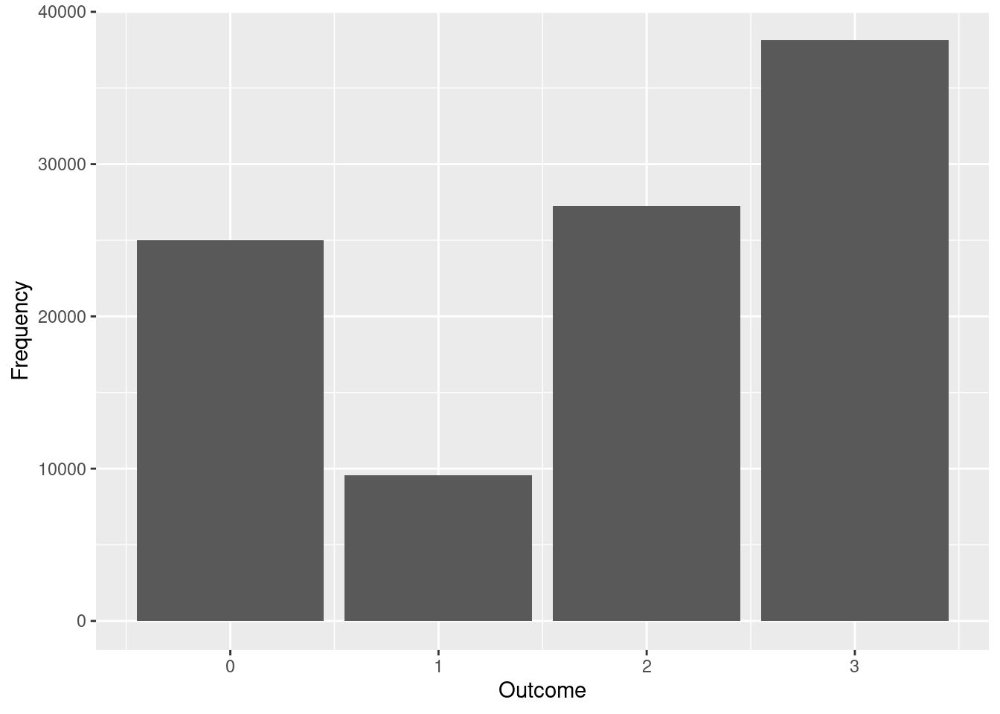
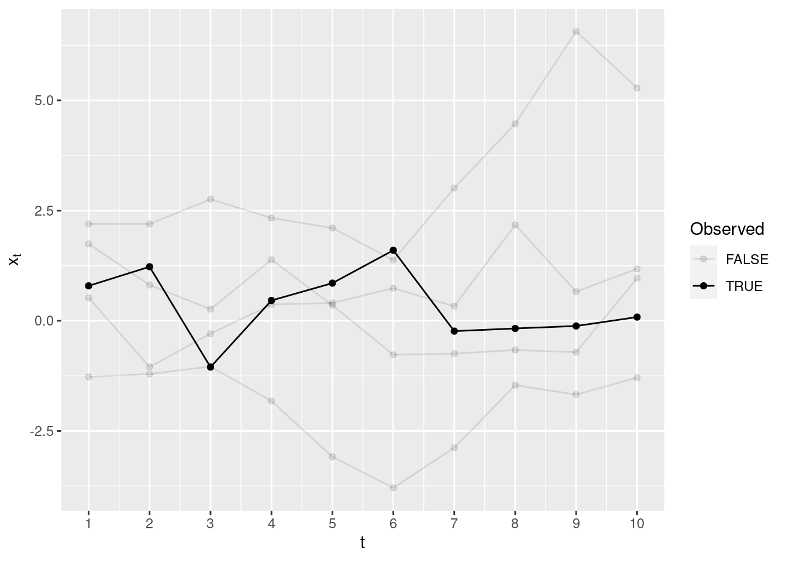
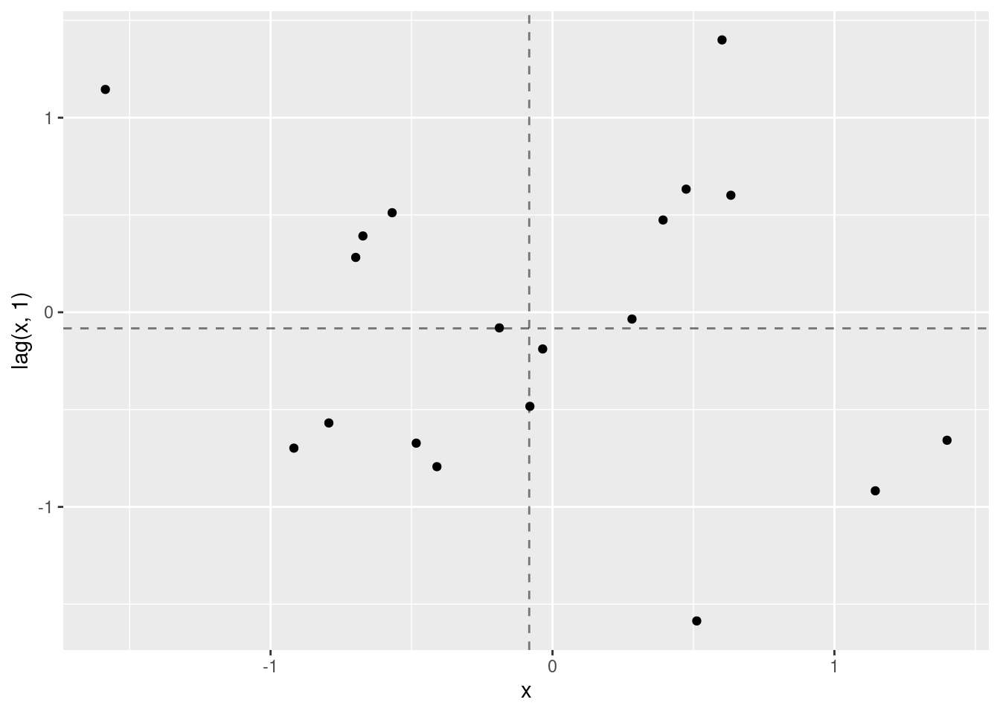
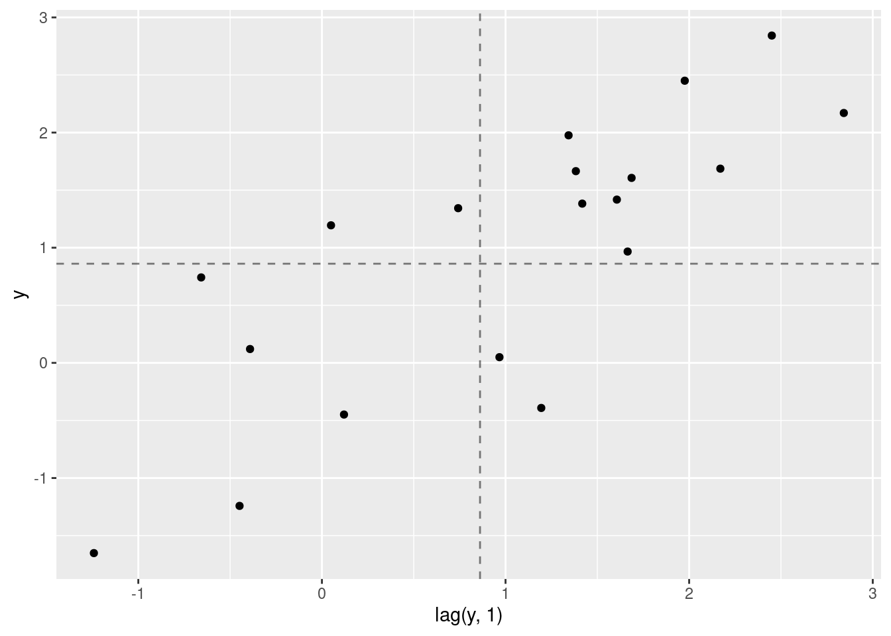
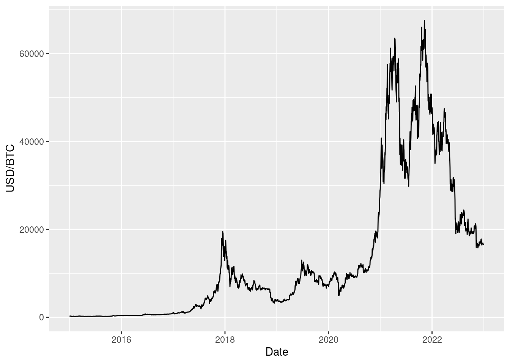
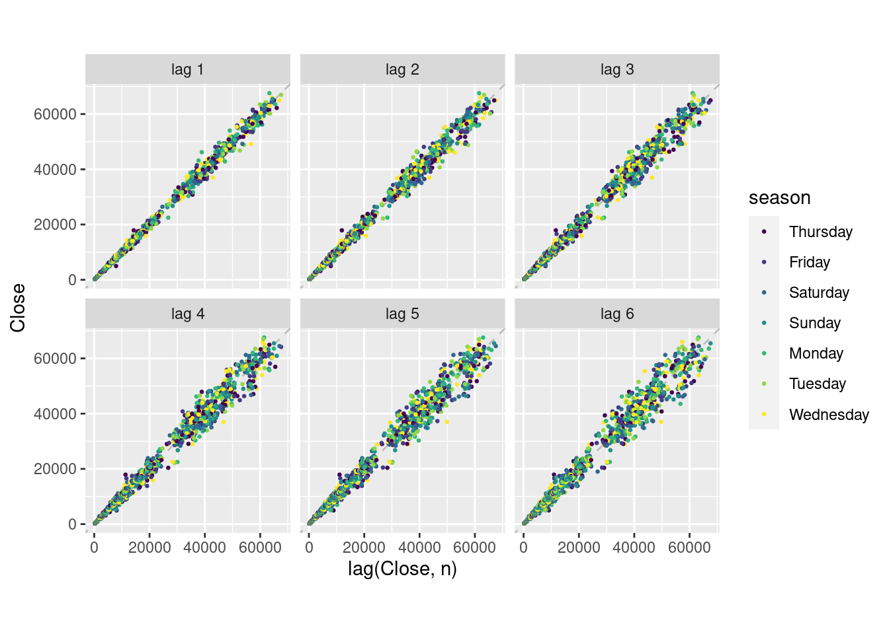

library(tidyverse)
library(tsibble)
library(tsbox)
library(fable)
library(feasts)
library(eurostat)
library(quantmod)2 Statistics Review
Let \(X\) and \(Y\) be two discrete random variables with possible values \(0, 1, \ldots, K\). The probability mass functions \(p_X(x)\) and \(p_Y(y)\) assign occurrence probabilities to each possible outcome.
For example:
\[ p_X(x) = \begin{cases} 0.250 & \text{for } x = 0\\ 0.095 & \text{for } x = 1 \\ 0.272 & \text{for } x = 2 \\ 0.383 & \text{for } x = 3 \\ 0 & \text{otherwise} \end{cases} \]
\[ p_Y(y) = \begin{cases} 0.76 & \text{for } y = 2\\ 0.24 & \text{for } y = 3 \\ 0 & \text{otherwise} \end{cases} \]
For convenience, the probability mass functions of \(X\) and \(Y\) are stored in the tibbles px and py.
px %>%
knitr::kable()| x | p |
|---|---|
| 0 | 0.250 |
| 1 | 0.095 |
| 2 | 0.272 |
| 3 | 0.383 |
py %>%
knitr::kable()| y | p |
|---|---|
| 2 | 0.76 |
| 3 | 0.24 |
The probability functions sum to one over all possible values by definition:
\[ \sum_{x = 0}^{3}p_X(x) = 0.250 + 0.095 + 0.272 + 0.383 = 1 \]
sum(px$p)[1] 1Example 2.1 (Sampling from a univariate distribution)
set.seed(12)
smpl_x <- px %>%
slice_sample(n = 1e5, weight_by = p, replace = TRUE)
head(smpl_x) %>%
knitr::kable(digits=3)| x | p |
|---|---|
| 3 | 0.383 |
| 0 | 0.250 |
| 1 | 0.095 |
| 3 | 0.383 |
| 3 | 0.383 |
| 3 | 0.383 |
It is useful to visualize the observed frequency of each outcome.
# Absolute frequencies (counts)
table(smpl_x$x)
0 1 2 3
25009 9577 27259 38155 # Relative frequencies (shares)
table(smpl_x$x) / nrow(smpl_x)
0 1 2 3
0.25009 0.09577 0.27259 0.38155 smpl_x %>%
ggplot(aes(x = x)) +
geom_bar() +
labs(
x = "Outcome",
y = "Frequency"
)
Exercise 2.1 (Probabilities) Show that the probability mass function of \(Y\) in Table 2.2 sums to one. Sample 10000 values from its distribution and compute the sample frequency of each outcome.
Solution.
# Type your code here2.1 Expectation
The expected value of a random variable is the average of all possible values that can occurr, weighted by their occurrence probabilities. It is a measure of the location of the distribution.
\[ \begin{align} \mu_x & = E(X) = \sum_{x = 0}^{3} x p_X(x) = 0 \times 0.250 + 1 \times 0.095 + 2 \times 0.272 + 3 \times 0.383 = 1.788 \\ \end{align} \]
mu_x <- sum(px$x * px$p)
mu_x[1] 1.788Exercise 2.2 (Expected Value) Compute the expected value of \(Y\).
Solution.
# Type your code hereIf you want to predict future values of a random variable, the expected value is your best guess in the sense that it minimises the expected value of the quadratic loss function:
\[ E[(X - \hat{x})^2] \]
Let us construct an example. You need to predict the result of \(X\) and you think that the best prediction is \(\bar{x} = 1\). When the game runs it will produce four possible values: 0, 1, 2, and 3. The error that you will make is:
\[ L(x) = (x - 1)^2 = \begin{cases} (0 - 1)^2 = 1 & \text{x = 0}\\ (1 - 1)^2 = 0 & \text{x = 1}\\ (2 - 1)^2 = 1 & \text{x = 2}\\ (3 - 1)^2 = 4 & \text{x = 3} \end{cases} \]
Exercise 2.3 (Expected Quadratic Loss) Compute the expected quadratic loss for a prediction \(\bar{x} = 1.5\).
Solution.
## Type your code here
# px %>%
# mutate(
# loss = ?
# )2.2 Variance
The variance of a random variable measures how different the possible values that can occur are. Values that occur more often (have higher probability) under \(p_X\) receive a higher weight. Values that occur less frequently under \(p_X\) are given a lower weight in the sum.
\[ \begin{align} Var(X) & = \sum_{x = 0}^{3} (x - \mu_x)^2 \times p_X(x) \\ & = (0 - 1.788)^2 \times 0.250 + (1 - 1.788)^2 \times 0.095 + (2 - 1.788)^2\times 0.272 + (3 - 1.788)^2 \times 0.383 \\ & = (-1.788)^2 \times 0.250 + (-0.788)^2 \times 0.095 + (0.212)^2\times 0.272 + (1.212)^2 \times 0.383 \\ & = 3.196 \times 0.250 + 0.620^2 \times 0.095 + 0.044 \times 0.272 + 1.468 \times 0.383 \\ & \approx 1.433 \end{align} \tag{2.1}\]
(px$x - mu_x)[1] -1.788 -0.788 0.212 1.212(px$x - mu_x)^2[1] 3.196944 0.620944 0.044944 1.468944px$p * (px$x - mu_x)^2[1] 0.79923600 0.05898968 0.01222477 0.56260555sum(px$p * (px$x - mu_x)^2)[1] 1.433056You can see from Equation 2.1 that it is the expected value of the squared diviations from the expected value.
\[ Var(X) = E(X - E(X))^2 \]
Definition 2.1 (Variance) The variance of a random variable (distribution) is a summary of the distribution and describes its spread: how different are the values that this distribution will generate.
\[ Var(X) = E[(X - E(X))^2] = E(X^2) - E(X)^2 \]
Exercise 2.4 (Variance) Compute the Variance of \(Y\).
Solution.
# Type your code hereTheorem 2.1 (Properties of the Expectation) Let \(X\) be a random variable with expected value \(E(X)\), let \(Y\) be a random variable with expected value \(E(Y)\), and let \(a\) be a fixed constant (\(a \in \mathbb{R}\)). The following properties are true:
\[ \begin{align} E(a) & = a \\ E(aX) & = aE(X) \\ E(X + Y) & = E(X) + E(Y) \end{align} \]
Furthermore, if \(X\) and \(Y\) are uncorrelated, then the expected value of the product of the two random variables equals the product of their expected values:
\[ E(XY) = E(X)E(Y) \]
Theorem 2.2 (Properties of the Variance) Let \(X\) be a random variable with expected value \(E(X)\), let \(Y\) be a random variable with expected value \(E(Y)\), and let \(a\) be a fixed constant (\(a \in \mathbb{R}\)). The following properties are true:
\[ Var(X) = E(X^2) - E(X)^2 \]
\[ \begin{align} Var(a) & = 0 \\ Var(aX) & = a^2 Var(X) \end{align} \] Furthermore, if \(X\) and \(Y\) are uncorrelated, then the variance of their sum equals the sum of their variances:
\[ Var(X + Y) = Var(X) + Var(Y) \]
Exercise 2.5 (Expected value and variance) Use the distributions of \(X\) and \(Y\) from Table 2.1 and Table 2.2 to compute the expected value and the variance of
\[ 2X + 3Y + 1. \]
Assume that \(X\) and \(Y\) are independent.
Solution. \[ E(2X + 3Y + 1) = \\ Var(2X + 3Y + 1) = \]
2.3 Joint Distribution
It is as summary of the joint distribution of \(X\) and \(Y\). The joint probability mass function tells you the probability of the simultaneous occurrence of \(x\) and \(y\). For example, you can ask it the question: what is the probability of \(x = 2\) and \(y = 3\).
For two discrete variables, it is convenient to present the joint distribution as a table with cell entries holding the probabilities. The joint distribution is given in the tibble pxy in a long format.
pxy %>%
knitr::kable()| x | y | p |
|---|---|---|
| 0 | 2 | 0.241 |
| 0 | 3 | 0.009 |
| 1 | 2 | 0.089 |
| 1 | 3 | 0.006 |
| 2 | 2 | 0.229 |
| 2 | 3 | 0.043 |
| 3 | 2 | 0.201 |
| 3 | 3 | 0.182 |
Sometimes it is more convenient to see this distribution in a wide format:
pxy %>%
pivot_wider(
id_cols = x,
names_from = y,
values_from = p,
names_prefix="y="
) %>%
knitr::kable(digits = 3)| x | y=2 | y=3 |
|---|---|---|
| 0 | 0.241 | 0.009 |
| 1 | 0.089 | 0.006 |
| 2 | 0.229 | 0.043 |
| 3 | 0.201 | 0.182 |
\[ p_{XY}(x=2, y=3) = 0.043 \]
The joint probability distribution function must sum (integrate) to one over all possible pairs of \(x\) and \(y\).
\[ \sum_{x = 0}^{3}\sum_{y = 2}^{3} p_{XY}(x, y) = 1 \]
sum(pxy$p)[1] 1In the example until now we have summarized the marginal distributions of \(X\) and \(Y\) but we have said nothing about their joint distribution. Usually the joint distribution is determined by the subject matter at hand, but for the sake of example we will look at two joint distributions so that we can get an idea how they work.
First we will construct a special joint distribution under the assumption of independence. Intuitively, two random variables are independent, if the outcome of one of the variables does not influence the probability distribution of the other. Imagine that you hold two lottery tickets: one from a lottery in Germany and another from a lottery in Bulgaria. It would be safe to assume that the realized winnings from the German lottery will not affect the odds to win from the Bulgarian ticket.
Now let us consider a case of dependent random variables. Let \(X\) be the level of a river (at some measurement point) at time \(t\) and \(Y\) be the level of the same river five minutes later. It woule be safe to assume that if the level of the river was high at \(t\) this would affect the distribution of the level of the river at \(t\) plus five minutes.
2.4 Marginal Distributions
The marginal distribution of \(X\) is obtained by summing the joint distribution of \(X\) and \(Y\) over all possible values of \(Y\).
\[ p_X(x) = \sum_{y=2}^{3}p_{XY}(x, y) \]
2.5 Conditional Distributions
pxy_w <- pxy %>%
pivot_wider(
id_cols = x,
names_from = y,
values_from = p,
names_prefix = "y="
) %>%
mutate(
p_x = `y=2` + `y=3`,
`y=2` = `y=2` / p_x,
`y=3` = `y=3` / p_x
)
pxy_w %>%
knitr::kable(digits = 3)| x | y=2 | y=3 | p_x |
|---|---|---|---|
| 0 | 0.964 | 0.036 | 0.250 |
| 1 | 0.937 | 0.063 | 0.095 |
| 2 | 0.842 | 0.158 | 0.272 |
| 3 | 0.525 | 0.475 | 0.383 |
Looking at the conditional distributions of \(Y\) given \(X\) in Table 2.4, you should notice that these are not the same for each value of \(X\). For example, \(Y=2\) is much more likely when \(X = 0\) compared to \(X = 3\).
2.6 Joint Distribution under Independence
Lets construct the joint distribution \(p_{XY}(x, y)\) that assigns a probability to the points \((x, y)\), assuming that \(X\) and \(Y\) are independent.
For independent random variables the joint probability of occurrence is simply the product of the marginal distributions.
\[ p_{XY}(x, y) = p_X(x)p_Y(y) \]
pxy_ind <- expand_grid(
px %>% rename(p_x = p),
py %>% rename(p_y = p)
)
pxy_ind <- pxy_ind %>%
mutate(
p = p_x * p_y
)pxy_ind_w <- pxy_ind %>%
pivot_wider(
id_cols = x,
names_from = y,
values_from = p,
names_prefix = "y="
)
pxy_ind_w %>%
knitr::kable(digits = 3)| x | y=2 | y=3 |
|---|---|---|
| 0 | 0.190 | 0.060 |
| 1 | 0.072 | 0.023 |
| 2 | 0.207 | 0.065 |
| 3 | 0.291 | 0.092 |
Let’s look at the conditional distributions of \(Y\) given \(X\). These answer the questions of the type: if \(X\) turns out to be \(0\), what are the probabilities for \(Y = 2\) and \(Y = 3\).
To get the conditional distributions of Y for each possible value of \(X\) we divide the cells of the joint distribution table by the marginal probabilities of each \(x\).
\[ p_{Y|X}(x, y) = \frac{p_{XY}(x, y)}{p_X(x)} \]
pxy_ind_w %>%
mutate(
p_x = `y=2` + `y=3`,
`y=2` = `y=2` / p_x,
`y=3` = `y=3` / p_x
) %>%
knitr::kable(digits = 3)| x | y=2 | y=3 | p_x |
|---|---|---|---|
| 0 | 0.76 | 0.24 | 0.250 |
| 1 | 0.76 | 0.24 | 0.095 |
| 2 | 0.76 | 0.24 | 0.272 |
| 3 | 0.76 | 0.24 | 0.383 |
What you should see in Table 2.6 is that the conditional distributions of \(Y\) are the same for every possible value of \(X\). This is of course a consequence of the way we constructed this joint distribution in the first place: namely, we assumed that \(X\) and \(Y\) are independent.
2.7 Conditional Expectation
We have seen how we derived the conditional distributions of \(Y\) given \(X\) in the previous section. Now we can ask the question: what is the expected value of \(Y\) given that \(X\) has already turned out to be 0 (for example). We can take the conditional distribution of \(Y\) given \(X = 0\) and compute the expected value of this distribution.
For the joint distribution under independence:
\[ E(Y | X=0) = \sum_{y = 2}^{3} y p_{Y|X=0}(y) = 2 \times 0.76 + 3 \times 0.24 = 2.24 \]
2 * 0.76 + 3 * 0.24[1] 2.24For the joint distribution in Table 2.4 the conditional expectation of \(Y\) given \(X = 0\) is
\[ E(Y | X=0) = \sum_{y = 2}^{3} y p_{Y|X=0}(y) = 2 \times 0.964 + 3 \times 0.036 = 2.036 \]
2 * 0.964 + 3 * 0.036[1] 2.036Let us write the conditional expectation of \(Y\) for each possible value of \(X\) for the dependent joint distribution case.
\[ E(Y | X = x) = \begin{cases} 2.036 & \text{for } x = 0 \\ 2.060 & \text{for } x = 1 \\ 2.158 & \text{for } x = 2 \\ 2.475 & \text{for } x = 3 \end{cases} \]
pxy %>%
group_by(x) %>%
summarise(
y = y,
p_y_x = p / sum(p)
) %>%
summarise(
E_Y_given_X = sum(y * p_y_x)
) %>%
knitr::kable(digits = 3)Warning: Returning more (or less) than 1 row per `summarise()` group was deprecated in
dplyr 1.1.0.
ℹ Please use `reframe()` instead.
ℹ When switching from `summarise()` to `reframe()`, remember that `reframe()`
always returns an ungrouped data frame and adjust accordingly.`summarise()` has grouped output by 'x'. You can override using the `.groups`
argument.| x | E_Y_given_X |
|---|---|
| 0 | 2.036 |
| 1 | 2.063 |
| 2 | 2.158 |
| 3 | 2.475 |
An important thing to see here is that the conditional expectation is different for each value of \(X\). As the value of \(X\) is uncertain (it is a random variable), the conditional expectation of \(Y\) given \(X\) is also a random variable. Its distribution is given by the possible values and the probabilities of occurrence of \(X\) (the marginal distribution of \(X\)).
Exercise 2.6 Calculate the expected value of \(Y\) given \(X\) for every possible value of \(X\) in the case joint distribution under independence.
Example 2.2 (Sampling from the Joint Distribution)
sample_joint <- pxy %>%
slice_sample(n = 1000, weight_by = p, replace = TRUE)
head(sample_joint)# A tibble: 6 × 3
x y p
<dbl> <dbl> <dbl>
1 3 2 0.201
2 0 2 0.241
3 3 2 0.201
4 3 2 0.201
5 3 3 0.182
6 2 2 0.229sample_joint %>%
group_by(x, y) %>%
summarise(
p = first(p),
n = n(),
f = n / nrow(sample_joint)
)`summarise()` has grouped output by 'x'. You can override using the `.groups`
argument.# A tibble: 8 × 5
# Groups: x [4]
x y p n f
<dbl> <dbl> <dbl> <int> <dbl>
1 0 2 0.241 243 0.243
2 0 3 0.009 10 0.01
3 1 2 0.089 85 0.085
4 1 3 0.006 5 0.005
5 2 2 0.229 226 0.226
6 2 3 0.043 43 0.043
7 3 2 0.201 199 0.199
8 3 3 0.182 189 0.1892.8 Covariance
The covariance measures the (linear) dependency between two random variables.
Definition 2.2 (Covariance) The covariance of two random variables \(X\) and \(Y\) is given by
\[ Cov(X, Y) = E[(X - E(X))(Y - E(Y))] \] Alternatively, it can be computed using the decomposition formula:
\[ Cov(X, Y) = E(XY) - E(X)E(Y) \]
In the analysis of time series we will often encounter situations where the expected value of one of the random variables is zero. As can be seen from the decomposition formula, in that case the covariance reduces to
\[ Cov(X, Y) = E(XY). \]
Closely related to the covariance is the correlation between \(X\) and \(Y\).
Definition 2.3 (Correlation) \[ \rho(X, Y) = \frac{Cov(X, Y)}{\sqrt{Var(X)Var(Y)}} \] It is easy to show that the correlation is bounded between -1 and 1.
\[ -1 \leq \rho(X, Y) \leq 1 \]
Exercise 2.7 (Correlation) Let X be a random variable with, and \(Y = a + bX\). Show that the correlation between \(X\) and \(Y\) equals one or minus one depending on the sign of \(b\). For simplicity, assume that \(E(X) = 0\).
Theorem 2.3 (Properties of the Covariance) Let \(X\) and \(Y\) be random variables and let \(a, b \in \mathbb{R}\) be fixed constants.
\[ Var(aX + bY) = a^2 Var(X) + b^2Var(Y) + 2abCov(X, Y) \]
Exercise 2.8 (Covariance) Compute the covariance of \(X\) and \(Y\) under the joint distributions given in Table 2.5 and Table 2.3. Use the pxy and pxy_ind tables for these calculations.
Solution.
# Type your code hereExercise 2.9 (Variance of Correlated Variables) Compute the variance of \(2X - Y\) using the same distributions as in Exercise 2.8.
2.9 Empirical Estimation of Moments
Throughout this course we will focus on three summaries of the stochastic processes: the mean (expected value, level), the variance (fluctuation), and the covariances/correlations (dependency) between lags of the random process.
In the the previous statistics-related courses we had a sample of (uncorrelated) observations \(x_1, x_2,\ldots, x_n\). We assumed that these are samples (realizations) from some normal distribution \(N(\mu, \sigma^2)\) with unknown mean and variance. We used the observed values to learn something about this distribution. We estimated its mean with
\[ \hat{\mu} = \frac{1}{n}\sum_{i = 1}^{n} x_i \]
and its variance with:
\[ \hat{\sigma}^2 = \frac{1}{n -1}\sum_{i = 1}^{n}(x_i - \hat{\mu})^2 \tag{2.2}\]
In the case of time series, however, we have only one observation for each time point.
n <- 10
B <- 5
set.seed(21)
dt_rw <- tibble(
r = rep(1:B, n),
e = rnorm(n = B*n)
) %>%
group_by(r) %>%
mutate(
t = 1:n,
x = cumsum(e),
is_observed = (r == 1),
)
dt_rw %>%
ggplot(
aes(
x = t,
y = x,
group = r,
alpha = factor(is_observed))
) +
geom_line() +
geom_point() +
labs(
alpha = "Observed",
y = expression(x[t])
) +
scale_x_continuous(breaks = 1:n)
In order to be able to apply our usual technique for moments estimation we have to assume that the random process is ergodic, meaning that we can estimate its statistical properties (mean, variance, correlations) from the its time series (observed values). We will talk more extensively about (weak) stationarity, which is a necessary (though not sufficient) condition for ergodicity. For (weakly) stationary time series the mean, variance and covariances do not change over time.
Definition 2.4 (Autocovariances and Autocorrelations) \[ \begin{align} \mu & = E(X_1) = E(X_2) = \ldots = E(X_T) \\ \gamma(0) & = Var(X_1) = Var(X_2) = \ldots = Var(X_T) \\ \gamma(1) & = Cov(X_1, X_2) = Cov(X_2, X_3) = \ldots = Cov(X_{t - 1}, X_{t}) = Cov(X_{T - 1}, X_{T}) \\ \gamma(k) & = Cov(X_{t}, X_{t + k}) \\ \rho(k) & = \frac{\gamma(k)}{\gamma(0)} \end{align} \]
For a random process \(X_1, X_2,\ldots, X_T\) and an observed time series \(x_1, x_2, \ldots, x_T\), we will estimate the mean with the arithmetic average of the observed values.
\[ \hat{\mu} = \frac{1}{T}\sum_{t = 1}^{T} x_{t} \]
We will estimate the variance of a stationary process with the empirical variance:
\[ \hat{\gamma}(0) = \frac{1}{T}\sum_{t = 1}^{T}(x_t - \bar{x})^2 \tag{2.3}\]
And the covariances with the empirical (auto-)covariances:
\[ \hat{\gamma}(k) = \frac{1}{T}\sum_{t = 1}^{T - k} (x_{t} - \hat{\mu})(x_{t + k} - \hat{\mu}) \tag{2.4}\]
and empirical (auto-)correlations:
\[ \hat{\rho}(k) = \frac{\hat{\gamma}(k)}{\hat{\gamma}(0)} \] To see the meaning of the autocovariances, let us create two artificial time series and plot their lags. The time series will be generated from two processes. The first one will be called the purely random or white noise process.
\[ e_t \sim N(0, 1) \text{ for every } t \\ E(e_t) = 0 \\ Var(e_t) = 1 \\ Cov(e_t, e_{t + k}) = 0, k \neq 0 \] The second one is be called a random walk.
\[ y_t = \sum_{i = 1}^{t} e_i \]
set.seed(432)
# Create 20 observations from two time series. rnorm draws random numbers
# from a normal distribution with zero expected value (mean) and standard
# deviation (sd) equal to 1. We call this distribution the standard normal
# distribution. In the mutate step we create the first two lags of the series
dt_sim <- tibble(
x = rnorm(n = 20, mean = 0, sd = 1),
y = cumsum(x)
) %>%
mutate(
x_l1 = lag(x, n = 1),
y_l1 = lag(y, n = 1)
)
mean_x <- mean(dt_sim$x)
mean_x[1] -0.08259397mean_y <- mean(dt_sim$y)
mean_y[1] 0.8611093dt_sim %>%
ggplot(aes(x = x, y = x_l1)) +
geom_point() +
geom_vline(xintercept=mean_x, lty=2, alpha = 0.5) +
geom_hline(yintercept=mean_x, lty=2, alpha = 0.5) +
labs(
x = "x",
y = "lag(x, 1)"
)Warning: Removed 1 rows containing missing values (`geom_point()`).
Looking at the plot, think about the signs of the cross-products that go into the formula for the covariance:
\[ (x_{t + 1} - \hat{\mu})(x_{t} - \hat{\mu}) \]
Where do you find positive and negative cross-products in the plot?
dt_sim %>%
ggplot(aes(x = y_l1, y = y)) +
geom_point() +
geom_vline(xintercept=mean_y, lty=2, alpha = 0.5) +
geom_hline(yintercept=mean_y, lty=2, alpha = 0.5) +
labs(
x = "lag(y, 1)",
y = "y"
)Warning: Removed 1 rows containing missing values (`geom_point()`).
The following code computes the covariance
# Compute the covariance
cov(dt_sim$x, dt_sim$x_l1, use = "complete.obs")[1] -0.1063495# COmpute the correlation
cor(dt_sim$x, dt_sim$x_l1, use = "complete.obs")[1] -0.1821236Note that cov computes the covariance according to formula Equation 2.2.
2.10 Exercises
The following code downloads
bitcoin <- getSymbols(
"BTC-USD",
from="2015-01-01",
to="2023-01-01",
src="yahoo",
periodicity="daily",
env = NULL)
names(bitcoin) <- c("Open", "High", "Low", "Close", "Volume", "Adjusted")
bc <- bitcoin %>%
ts_tsibble() %>%
pivot_wider(
names_from = id,
values_from = value
)# Plots the closing exchange rate against the time index
bc %>%
autoplot(Close) +
labs(
# Set the labels for the x and y axis
x = "Date",
y = "USD/BTC"
)
- Compute the average exchange rate (
Close).
# Type your code here- Compute the empirical variance using the
varfunction
# Type your code here- Construct a two new variables that contain the first and the second lags of
Close. Leave onlyCloseand its lags in the resulting tsibble. Hint: Use themutateandlagfunctions and select the columns usingselect.
# Type your code here
# Select the code below and press Ctrl-Shift-c in order to remove the comments- Create a scatterplot for
Closeand its first lag. Hint: Use the code generating the scatterplot in the simulation above and adapt it.
# Type your code here- Compute the covariance between
Closeand its first lag. Compute the autocorrelation coefficient (empirical autocorrelation) betweenCloseand its first lag. Hint: Look into the documentation ofcovandcorto find out how to handle missing values.
# Type your code here- Use the
gg_lagfunction to create scatterplots for the between the time series and its first six lags. What patterns can you see in these scatterplots?
bc %>%
gg_lag(
Close,
lags = 1:6,
geom="point",
size = 0.5
)
- Use the
acffunction to plot the autocorrelation function of theClosetime series.
# Type your code here